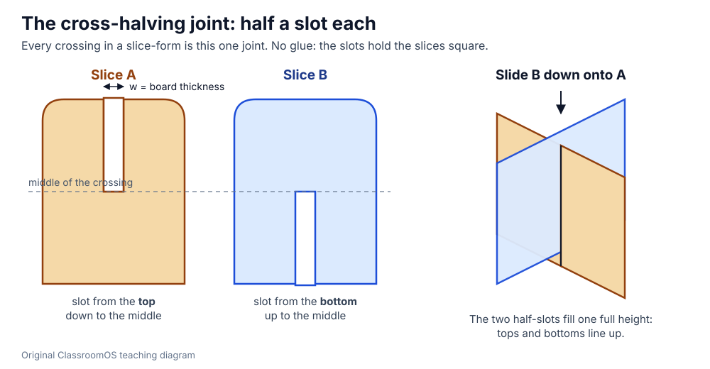
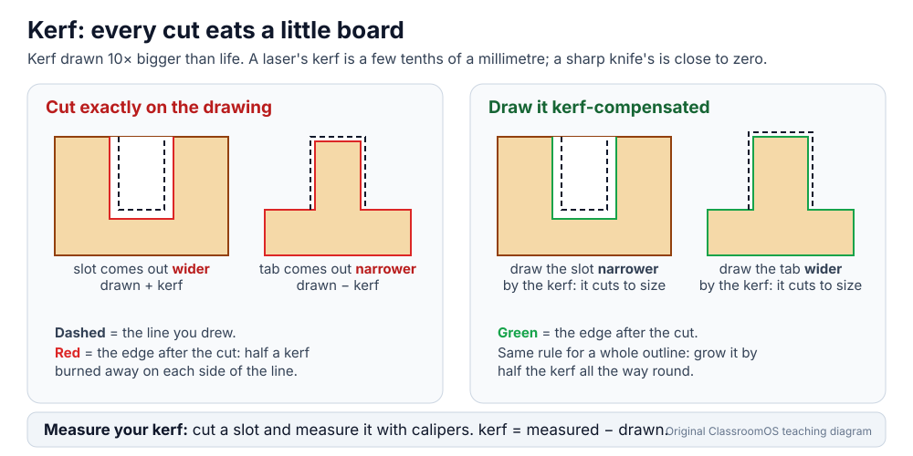
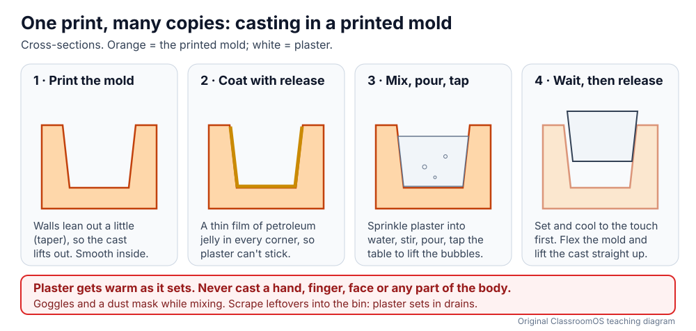

3D Design · Make it real · Beyond the Printer
Make It in Cardboard, Paper and Plaster
A 3D printer builds one object, slowly, one layer at a time. A class of thirty can't all print a 20 cm sculpture this week. But a 3D model is just a description of a shape, and there are other ways to turn it into a real thing: slice it into cardboard sheets that slot together, unfold its surface into a paper net, cut it as a flat-pack kit, or print one mold and cast copies. Each turns the same digital model into something you can hold, usually faster, bigger and cheaper than a print.
One model, five ways to make it
Hold up a cereal box, a cardboard shipping box with fold-in flaps, and a plaster or chocolate figure from a mold. None came out of a 3D printer, and all three started as a drawing of a 3D shape. Designers choose the process that suits the job:
| Process | What you make | Good at | Not so good at |
|---|---|---|---|
| 3D print | The solid itself, layer by layer | Small, detailed, strong parts that fit and move | Big objects (hours or days), a whole class at once |
| Slice-form | Flat slices that slot together into a grid | Big forms fast: sculptures, likenesses, desk organisers | Fine detail; the surface is only suggested |
| Folded net | The surface, unfolded flat, then folded and glued | Boxes, prisms, pyramids, packaging, low-poly sculpture | Curved surfaces (they must be cut into flat faces) |
| Flat-pack | Flat panels joined with tab-and-slot fingers | Boxes, trays, furniture models, anything with flat walls | Curves; it needs straight cuts and an accurate board thickness |
| Casting | Copies poured into one printed mold | Many identical copies, heavy solid objects | Undercuts that trap the cast; it needs time to set |
1 · Slice-forms: a shape made of crossed slices
Cut a loaf of bread one way and every slice shows the loaf's outline at that place. A slice-form does that twice: one set of slices runs front to back (the A slices), another runs left to right (the B slices), and every place they cross gets a cross-halving joint. Slot them together and the grid of outlines shows the whole 3D shape, standing up on its own with no glue.

Slice-form generator
Pick a shape, set its size and your board's thickness, and the generator slices it, cuts every slot, labels every piece with its partner, and lays the pieces out on letter pages. Measure your board with calipers first: single-wall corrugated card is usually about 3–4 mm, cereal-box card under 1 mm. Every set of sheets ends with a fit strip.
2 · Folded nets: the surface, unfolded
A net is a solid's surface cut along some of its edges and laid flat, like a cereal box opened out. Folded back up, the edges that were cut meet again, and a glue tab on one side of each seam holds them. That is exactly the "faces, edges and corners" model from What Is a 3D Model?: a net only works for a shape made of flat faces, and Euler's V − E + F = 2 still holds.
- Solid lines are cuts; dashed lines are folds. Score every fold first: run an empty ballpoint pen along a ruler on the line, pressing firmly. The card then folds crisp and straight on the line.
- Tabs go inside. Fold every tab in, put glue on the tab, and press the face onto it from outside. Glue the last seam with the box nearly closed.
- Thick card needs room. Folds take up a little card. On board thicker than about 1 mm, a box's lid can come out tight; make the top face a millimetre bigger.
3 · Flat-pack: tab-and-slot joints and kerf
Flat-pack furniture comes as flat panels that slot together. A finger joint (or box joint) is the simplest version: the edge of each panel is cut into tabs ("fingers") and gaps, and the fingers of one panel fill the gaps of the next, so the corner locks square. With a craft knife on cardboard, cutting on the line is close enough. On a laser cutter it isn't, because the beam burns away a thin line of board called the kerf.

Measure your kerf
Flat-pack tray generator
An open-top tray with finger joints on every corner and along the base. Set the outside size, the board and the kerf. The fingers are spread evenly, always an odd number per edge, so both ends of an edge match.
- Craft knives: cut on a cutting mat, along a steel ruler, with the blade moving away from your other hand. Several light passes beat one hard one. K–2 use scissors on thin card.
- Laser cutters: run only by a trained adult, lid closed, extraction on, and never left alone while cutting: cardboard and paper can catch fire.
4 · Safe casting: one printed mold, many copies
To make thirty game pieces, you could print thirty, or print one mold and cast thirty. Casting pours a liquid that hardens, such as plaster, into a hollow shape. The printed mold is the negative: the empty space where the object will be. In any CAD app it is one subtraction: a block minus the object.

- Never cast any part of the body in plaster. Plaster of Paris gives off heat as it sets. In UK schools, students who put their hands into setting plaster suffered severe burns, and lost fingers or hands; art and science teaching bodies now say no body casts in plaster at all.
- Goggles and a dust mask while mixing; plaster dust irritates eyes and lungs. Mix in a bucket you can scrape out, and put leftover plaster in the bin, never down a sink: it sets in the drain.
- Not for food. Printed molds and printed cookie cutters aren't food-safe: the grooves between layers hold food and bacteria and can't be cleaned properly. Cast plaster, soap from a teacher-melted base, or wax, not chocolate.
5 · Hands-on task: build a cardboard slice-form
Build one slice-form from the generator: the pencil crate as a useful tool, or the owl or fish as a likeness. Or build the flat-pack tray, or a net. Record the numbers as you go; they are the evidence that you designed it, not just cut it out.
- Measure the board three times with calipers and use the average as the board thickness.
- Print the templates at 100% ("Actual size", not "Fit to page"). Check the 50 mm bar on each page with a ruler.
- Cut and test the fit strip. Set the allowance from it, and re-print if it changed.
- Cut, slot and assemble. Time yourself. Fix tight slots with one extra knife pass, not by forcing the card.
- Test it: does it stand on its own? Does it hold what it is for (pencils, a phone)? Does it read as what it is from across the room?
| What I built and its Trio trait (useful / likeness) | |||
|---|---|---|---|
| Board thickness: three readings (mm) | |||
| Fit strip: the slot that fit best (mm), allowance set | |||
| Cutting tool and kerf | |||
| Size, number of pieces, pages | |||
| Time to cut · time to assemble | |||
| Does it stand? Does it do its job? Does it read? | |||
| One change for version 2 | |||
Use Save answers in the lesson's heart | save | print pill to keep the record in your browser, or print the lesson as a handout.
Pick your level
K–2 · Fold and slot
Fold a teacher-printed cube or box net on thin card: count its faces, edges and corners. Slot two pre-cut card shapes together and talk about why the slots go halfway.
3–5 · Build a slice-form
Build the dome or the pencil crate from a teacher-cut kit, matching the labels A1–B4. Generate a prism or pyramid net, fold it, and check V − E + F = 2.
6–8 · Design and measure
Measure the board, test the fit strip, and build your own slice-form or tray from the generators. Fill in the build record and compare its surface area and volume with the generator's.
9–12 · Compensate and cast
Measure a laser's kerf, compensate a flat-pack design, and explain the numbers. Model a two-part mold with draft for a Trio piece and cast it in plaster with a supervised setup.
Checkpoint
You're ready to move on when you can:
- Choose a process (print, slice-form, net, flat-pack, cast) for a job and give a reason.
- Explain why each slice in a cross-halving joint gets a slot to the middle, and why the slot matches the board thickness.
- Read a net's cut, fold and glue-tab lines, and count its faces, edges and corners.
- Explain kerf, measure it, and say which way to change slots and tabs.
- Print a template at 100% and prove the scale with the 50 mm bar.
- State the plaster safety rules, and why printed molds aren't for food.
Next: size the fit of a printed part in Measure and Fit, join printed parts in Joining Parts, or model the mold and the shape in Workbench.
Practice Problems
Easy1. How many faces does the net of a box have?
Easy2. Slices A and B cross where the shape is 80 mm tall. How deep is A's slot (mm)?
Easy3. Why must you never cast a hand in plaster of Paris?
Medium4. A box net has 6 faces. How many folds join face to face (not counting tabs)?
Medium5. What is the surface area of a 60 × 40 × 40 mm box (mm²)?
Medium6. A flat-pack tray is 120 mm wide outside, made of 3 mm board. How wide is it inside (mm)?
Medium7. A laser cuts 4 mm board with a 0.2 mm kerf. What slot width do you draw so the cut slot is exactly 4 mm?
Challenge8. You drew a 3.00 mm slot; the laser-cut slot measures 3.24 mm. What is the kerf (mm)?
Challenge9. A pyramid with a 5-sided base has 6 faces and 10 edges. How many glue tabs does its net need (one per seam)?
Challenge10. Pencil-crate slices are 15.7 mm apart, centre to centre, in 3 mm board. A pencil is about 8 mm across its corners. How wide is each pocket (mm)?
Vocabulary
- Slice-form
- A 3D shape built from flat slices that slot together in a crossing grid.
- Cross-halving joint
- Two flat pieces each slotted halfway, so they cross and lock at right angles.
- Net
- A solid's surface unfolded flat, with cut lines, fold lines and glue tabs.
- Glue tab
- A flap on one edge of a net that is glued behind the edge it meets.
- Score
- To press a line into card so it folds crisply along it.
- Finger joint
- A corner joint where tabs on one panel fill the gaps of the next; a kind of tab-and-slot joint.
- Kerf
- The width of material a cut removes.
- Laser cutter
- A machine that cuts sheet material with a focused beam of light, following a drawing.
- Mold
- A hollow shape that a liquid is poured into, so it hardens into a copy.
- Draft (taper)
- A slight outward lean on a mold's walls so the cast can come out.
- Undercut
- An overhang inside a mold that would trap the cast.
Sources
- NSEAD (National Society for Education in Art and Design), Health & safety: Plaster of Paris (never submerge hands or other body parts in setting plaster; severe burns have needed surgery or amputation; links to CLEAPSS guidance PS072).
- Royal Society of Chemistry, Plaster of Paris classroom practical (the setting reaction gives off heat; "do not make any cast of any body parts").
- London Borough of Barnet, Health & Safety Bulletin 193: Plaster of Paris (a student's hand-casting injury; setting plaster in bulk can reach about 60 °C).
- Prusa Knowledge Base, Food safe FDM printing (the grooves between printed layers hold food and bacteria and are almost impossible to clean).
- Nets and V − E + F = 2: this site's What Is a 3D Model?. Board thickness and fit: Measure and Fit.
- Every template on this page is generated in your browser by ClassroomOS from your numbers; kerf and board thickness must be measured on your own tools and card.
Next: Measure and Fit · Joining Parts · Materials & Strength · 3D Printing · Workbench · Forge